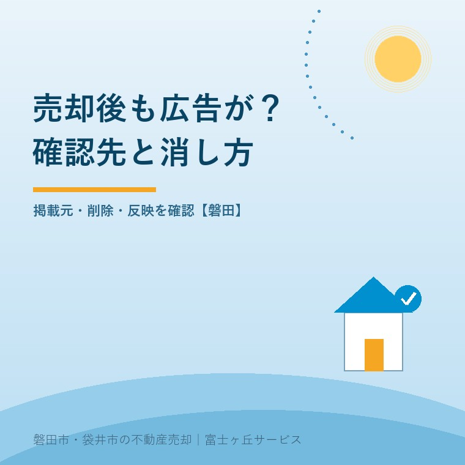
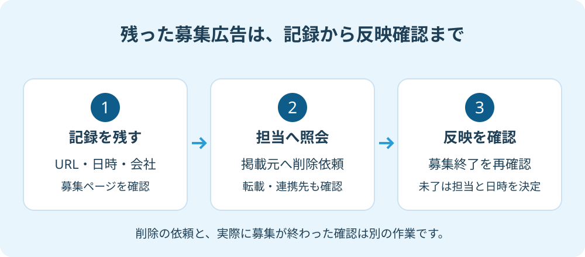

売却後も広告が消えない｜磐田の売主の確認先
2026年9月27日｜カテゴリ：売却実務・募集広告

この記事の要点
Q. 実家は契約済みなのに、まだ売出し広告が出ています。誰に確認しますか？
広告のURL・確認日時・掲載会社名を保存し、依頼した仲介会社へ、掲載元への削除連絡と反映確認を求めます。契約済みと判明した募集広告は、定期更新日を待たず速やかに削除する扱いです。検索結果だけの表示か、募集ページが残るかも分けます。磐田市・袋井市・森町では、富士ヶ丘サービスのような地域密着の会社に相談する選択肢もあります。
大石浩之（磐田市／不動産業）です。実家の売買契約を終えたのに、ネットではまだ内覧を受け付けている。そんな表示を見れば、売主も買主も落ち着きません。ここで必要なのは、いきなり業者の悪意を決めつけることでも、更新日まで黙って待つことでもありません。どのページに、誰の名前で、何が残っているかを確かめます。
332件は賃貸住宅の共有情報。売買の件数ではない
首都圏不動産公正取引協議会が2026年5月29日に公表した資料では、2025年度に全国で共有された違反物件情報は1,332件で、うち契約済みで取引できないおとり広告は332件でした。対象は賃貸住宅です。2026年9月27日に原文を確認しました。
この332件を、売買物件で広告が消えなかった件数として紹介することはできません。磐田市の件数でも、インターネット広告全体に対する発生率でもありません。取組みによって共有された情報の集計だからです。数字の大きさを使って、目の前の仲介会社が悪質だと結論づける資料にはしません。
それでも私が売主向けに取り上げるのは、契約済みの物件を募集し続けないための管理が、不動産の仕事の一部だからです。物件を載せる作業には目が向いても、募集を終える作業は売主から見えにくい。契約できた後にも確認する仕事が残ることを、広告の扱いから考えます。
契約済みの広告は、次回更新日まで残してよいのか
不動産公正取引協議会連合会の「おとり広告」の留意事項は、契約済みと判明した物件を、定期更新の期間が到来する前でも速やかに削除するよう求めています。「不動産の公正競争規約」に収録されたガイドラインの本文53ページで確認できます。
同資料は、情報更新の期間を最長でも2週間としています。ここが読み違えやすいところです。2週間は、契約済みの募集広告を残してよい猶予ではありません。「次の更新が来週なので、そのままです」という説明なら、契約済みの連絡と削除対応がどこまで進んでいるかを尋ねます。
売主側でも、申込みを受けた段階、売買契約を結んだ段階、代金決済と引渡しを終えた段階を区別して伝えます。口頭で「売れた」とだけ言うと、どの段階かが相手に伝わりません。契約書上の契約日を確認し、仲介担当へ事実をそろえて問い合わせます。
契約後も融資などの条件が残っている場合は、契約内容を担当者へ確認してください。ただし、条件が残ることを理由に、契約済みの物件を誰でも購入できるように表示してよい、と自分たちで決めないことです。実際の表示と契約状況を合わせた判断が必要です。
私は、このルールの良い点は、家を探す人の時間と、契約した当事者の落ち着きを守れることだと考えます。買えない家の見学を申し込ませずに済むうえ、売主も「まだ別の人を募集しているのか」という確認の手間を減らせます。広告を適切に終えることは、契約後の説明にもつながります。
URL・日時・掲載会社を一組で保存する
売却後の広告が残っているときは、ページのURL、見た日時、掲載会社名を一組で保存します。検索結果の画像だけでは、別の担当者が同じ募集情報へたどり着けないことがあります。物件番号が表示されていれば、それも記録します。
| 残っている場所 | 最初に確認すること |
|---|---|
| 仲介会社の自社ページ | 募集条件、問い合わせの表示、更新日 |
| 不動産ポータルサイト | 掲載会社名、物件番号、元の掲載ページ |
| 別会社が載せたページ | 掲載元と、依頼した仲介会社との連絡経路 |
| 検索結果の見出しだけ | リンク先にも募集ページが残っているか |
| 成約事例としての紹介 | 募集中と誤認させる表示、写真利用の扱い |
検索結果に古い見出しが出ていても、開いた先は募集終了になっている場合があります。この場合は、現に募集を続けるページと分けて記録します。逆に、一覧から消えていても、保存していたURLでは募集ページが開くなら、そのURLも担当者へ渡します。ページを一か所見ただけで削除完了としないためです。
成約事例の紹介も、募集中の広告と一律には扱いません。ただし「成約済み」と小さく書けば、どんな内容でも残してよいという判断にはしません。募集のように見える価格表示や問い合わせの案内がないか、外観・室内写真を引き続き使う合意がどうなっているかを、掲載会社へ確かめます。
家族へ状況を共有するときも、画面を必要以上に広めない方がよいと私は考えます。室内の写真や詳しい所在地が写っている資料は、まず担当者と相談先へ必要な範囲で渡します。怒りに任せてSNSへ業者名と家の写真を投稿しても、削除の作業先がはっきりするわけではありません。
もともとどんな条件で広告を作ったかを確かめるには、売主が販売図面で見るべき項目も役立ちます。販売図面の控えと実際の画面を並べ、同じ物件なのか、掲載会社はどこなのかを照合します。

仲介会社には、削除依頼と完了確認を分けて聞く
募集広告の削除を仲介会社へ尋ねるときは、誰に連絡したかと、実際の表示がどうなったかを分けて確認します。まず依頼した仲介会社の担当者へ、保存したURLと画面を渡します。自社サイトだけでなく、別会社やポータルサイトへの掲載があるかも尋ねます。
消すように頼んだ、で仕事を終わらせない。これが私の考えです。売主にとって必要なのは、担当者が操作したという返事だけでなく、家がまだ買えるように表示されていないことです。仲介会社には、削除依頼の送信と、その後の反映確認まで担当を決めてほしい。その手間を売主の検索作業だけに預けたくありません。
例えば次のように、確認した事実と依頼を短く書けます。これは問い合わせ文の例であり、実際の相談事例ではありません。
「○月○日に売買契約を締結した物件について、○月○日○時現在、下記URLに募集中の表示があります。掲載会社と削除連絡の状況、反映を確認する担当者・予定日時を教えてください。別の掲載先があれば、そちらの対応も確認をお願いします。」
返答が「システムの反映待ち」なら、削除操作の日時と、連携先への送信状況を尋ねます。その説明が正しいかは、画面だけでは私にも分かりません。私は、担当者の回答と再確認の時刻を記録する方法を勧めます。無期限に待つためではなく、未了の作業がどこにあるかを確かめるためです。
複数の会社へ売却を頼んでいる場合は、各社に契約成立の連絡が届いているかも確認します。専任媒介と一般媒介の違いを踏まえ、家族側の連絡担当を一人決めると、誰かが伝えたはずという行き違いを減らせます。
業者間の物件情報と、一般向けの募集広告も別に確認します。レインズの取引状況を確かめる方法は一つの資料ですが、そこで状況が更新されたことだけで、すべての広告が削除された証拠にはしません。残っているURLごとに確認結果を残します。
磐田の売主が相談先へ渡す情報と、今日の一歩
磐田市の物件に関する広告表示の相談先は、静岡県を管轄する東海不動産公正取引協議会の案内で確認できます。公式の相談ページには、静岡地区調査指導委員会も掲載されています。332件の発表元が首都圏の協議会だからといって、磐田の窓口も同じとは限りません。
まず仲介会社へ照会し、回答がない場合は会社の責任者にも、依頼日時と対象URLを伝えます。掲載先に問題報告の窓口があれば、サイトの案内に沿って相談できます。それでも解決しない広告表示の問題について、東海の相談窓口へ状況を整理して尋ねます。受付先や提出方法は公式案内で確認してください。
相談用のメモは、契約日、広告を確認した日時、掲載会社、URL、担当者への連絡日、受けた回答の順にします。売買契約書を求められた場合は、提出が必要な箇所と安全な送付方法を相談先へ確認します。買主の情報まで、関係のない掲載会社へ無制限に渡す必要はありません。
広告を消す相談と、契約を解除できるか、損害賠償を求められるかという判断は分けてください。広告が残っているという事実だけから、売買契約の効力まで私が決めることはできません。契約上の権利や損害についての個別判断は、弁護士などの専門家に確認を。
富士ヶ丘サービスでは、磐田・袋井の実家について、介護と不動産を一体で相談できます。家族が困らない売却のためには、売出しの段取りだけでなく、契約後に募集を終える段取りも必要だと私は考えます。家の引継ぎと広告の終了を、同じ予定表で確認します。
- 残っている募集ページを一つ開き、URL・日時・会社名を保存する。
- 仲介担当へ、削除の依頼先と反映確認の予定を尋ねる。
- 未解決なら、やり取りの記録を添えて責任者や広告相談窓口へ相談する。
よくある質問
売却後の広告は、どこに何が残っているかを確認してから対応先を決めます。
- 次の更新日まで待ってくださいと言われたら？
- 不動産公正取引協議会連合会の留意事項は、契約済みと判明した物件について、定期更新の期間が来る前でも速やかな削除を求めています。更新予定日だけを理由に待つのではなく、削除操作の実施日時、連携先への連絡、実際の表示確認を仲介会社へ尋ねてください。反映待ちと言われた場合も、再確認の日時と担当者を決めます。
- 検索結果には出ますが、リンク先は消えています。広告違反ですか？
- 検索結果の見出しと、リンク先の募集ページは分けて確認します。リンク先で募集が終わっている場合、検索結果に以前の情報が残っている可能性もあります。検索結果だけで故意の募集継続や違反と断定せず、見た日時、検索結果、遷移先の状態を記録してください。残存情報への対応を掲載会社やサイト運営者に相談します。
- 磐田市の物件について、首都圏の協議会へ相談するのですか？
- 今回の332件を公表したのは首都圏不動産公正取引協議会ですが、静岡県は東海不動産公正取引協議会の管轄です。まず仲介会社と掲載元へ確認し、解決しない広告表示の問題は東海の公式相談案内を確認してください。静岡地区調査指導委員会も掲載されています。契約解除や損害賠償などの個別の法律判断は専門家に確認を。

この記事を書いた人：大石浩之（磐田市／不動産業・宅地建物取引士）
富士ヶ丘サービス株式会社。介護施設の運営から不動産事業を始め、磐田市・袋井市・森町で、介護と相続、実家の売却を一体で相談できる窓口を設けています。家族が困らない売却のため、資料と現地の条件を一件ずつ整理します。著者プロフィール
参考にした公式情報
2026年9月27日確認。
本記事は2026年9月27日時点の公開情報と筆者の意見です。制度・数値・手続きは変更されることがあります。個別の契約・税務・登記・相続の判断は、弁護士・税理士・司法書士などの専門家に確認を。